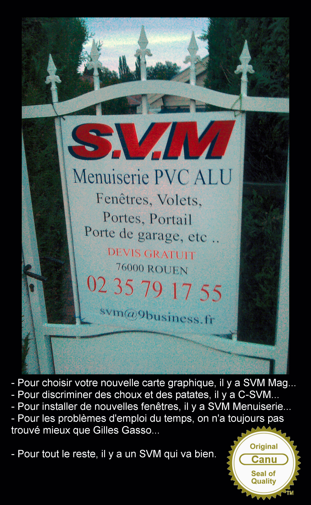

Thèmatiques -- research key words
Deep learning
Kernel machines
MIP for machine learning
Model selection
Large scale factorisation for recommandation
Projets
KernSig
(Blanc 2006)
Cadi
(Technologies logicielles 2007)
ClasSel
(Défi 2008)
Asap (Emergent 2009)
GEN-EASE (CSOSG 2009)
Hermès
(FUI 2012) : facrotisation pour la recommandation
et la relation client personnalisée et contextualisée
RSCM (FUI 2013)
Deep in France
(ANR 2016)
RAIMo
(Chaire IA, 2020)
